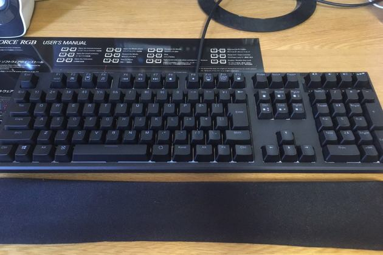

モノにこだわるとちょっとだけ人生豊かになるよという話
初めに
どうもこんにちは。プログラム班に所属しているふぇにと申します。
唐突ですが皆さん、普段使うモノにはこだわりがありますか？
毎日使うバッグやパソコン、財布、服、文房具などなど…
使う道具には何かしらの思い入れがあったり、頑張ってお金を貯めて買ったり誰かから貰ったりといったエピソードがあると思います。
なかったらすいません。
昔から持っているものを大切に使うのもいいことですが、新しくかつ便利なものを取り入れることによって、QOL（クオリティ･オブ･ライフ）はぐぐんと上昇します。
というわけで今回は、私の愛用しているモノを厳選して紹介していきます。それぞれがこだわって選んだアイテムです。少しでも参考にして頂けると嬉しいです。
半ば私の自己満記事となってしまいますがそこはご了承ください。
REALFORCE RGB AEAX02(東プレ)

皆さんお馴染み(？)高級キーボードで知られるREALFORCEです。1万後半〜高いもので3万円ほどします。
普通のキーボードと何が違うの？と思う方も勿論いらっしゃるでしょう。
ここがすごい！その1 打ち心地
こちらは普通のキーボードと違い静電容量無接点方式という方式を採用しています。
キーの構造自体が違うというわけです。それにより心地良い打ち心地を実現しています。
例えばセブン銀行ATMのテンキーなんかはこちらの方式を採用しているのでぜひ触ってみてください。
苦痛でしかないはずのレポートが幾分か楽しくなるかもしれませんね。保証はしません。
ただし打ち心地は感覚的なものなので、人によって好みは大きく変わってきます。
そのため気になった方は試し打ちするのをおすすめします。必ずしも高けりゃいいってもんではないです。
秋葉原のヨドバシカメラかTSUKUMOに行けばREALFORCEに限らず数々のキーボードが陳列されているので、お気に入りのキーボードが見つかること間違いなし。
ここがすごい！その2 ラインナップの豊富さ
REALFORCEと一口に言っても、キーボードのラインナップは多岐にわたります。 キーを押し込む重さが違ったり、静音仕様だったり、キー配置が違ったりと、正直ややこしくて混乱しちゃうと思います。 そのため実際にそれぞれのタイプを触ってみるのがベスト。
ちなみに私が使っているのはゲーミングモデルであるRGB。通常モデルと打鍵感が異なり、個人的にはこちらが好みだったので購入に至りました。

おまけに光ります。素敵ですね。
正直かなり高いですが、一見の価値ありです。
リストレスト(画像手前)も合わせて買っておくとタイピングが格段に楽になります。
iPad（第6世代）（+Apple Pencil）
私の人生を変えてくれたと言っても過言ではないこちらのiPad。2018年4月に購入し、そこから肌身離さず毎日持ち歩いています。
スペック自体はハイエンドモデルに比べれば劣るものの、マルチタスク機能（1つの画面で2つのアプリを同時に使える）などの機能面が充実しており、コストパフォーマンスに優れた製品といえます。
金銭的に余裕のある方には最新モデルのiPadProが断然オススメですが（新しいApplePencilが使えるのは最新モデルのiPadProだけ）いかんせん高いので、
一式5万円程度で購入できるこちらのiPad（第6世代）も選択肢として提案しておきます。
このiPadの売りはApplePencilに対応していることで、現在iPadProを除くと対応しているのはこちらのiPad第6世代のみとなります。
ApplePencilが本領を発揮するのは手書きメモアプリを使うとき。
手書きメモアプリにも純正のものからサードパーティ製まで様々ありますが、個人的に激推ししたいのがGoodNotes4というアプリです。
有料アプリで960円しますが、値段以上の価値を感じさせてくれるアプリです。おすすめポイントを下に列挙しておきます。
1.ペンの色変更も太さ変更も自由自在
カラーは16進数のカラーコードで指定することもでき、太さは96段階から選ぶことができます。普通のノートとして使う分には問題ないですね。
2.用紙も選び放題
罫線の入った紙、普通紙、方眼紙などから選ぶことができます。表紙も種類豊富。
3.非常に便利な投げ縄ツール
このアプリには投げ縄ツールというものがあります。囲んだ範囲内にある手書き文字をまとめて場所移動したり、 サイズ変更、カラー変更、コピー&他のページにペーストできるなど、実に便利な機能が揃っています。
4.PDFファイルに直接書き込める
ダウンロードしてきたPDFファイルに直接手書きでメモを書き加えることもできます。 授業支援システムで拾ってきた資料に直接書き込むことができるため、テスト勉強も捗るはずです。
5.PDFファイルと手書きメモを一括管理、フォルダ分けも
手書きメモやダウンロードしたPDFファイルはフォルダで一括管理することができます。
私も授業関連のフォルダ、タスクをまとめるフォルダ、ゲーム制作関連のフォルダといった風に分類しています。
フォルダの中にさらにフォルダを作ることも可能です。
そしてこのGoodNotesをインストールすることにより、iPadをノート代わりとして使うことができます。
現に私も授業のノートは基本全てiPadで取っています。
「ええーでも書き心地とか違うじゃん」と思ったそこのアナタ！！
なんと素晴らしいことにペーパーライクフィルムというものが販売されています。これを貼るだけであら不思議、紙のような書き心地を実現することができます。
完全再現とまではいかないですが程よいザラザラ感を得られます。複数メーカーから出ているので比較検討すべし。
Anker PowerCore 10000 , PowerCore Ⅱ 20000

皆さんご存知Anker製のモバイルバッテリー。家電量販店等で売られているものに比べ安い上に性能も申し分ないためずっとお世話になっています。
私はiPadや授業出席用iPadも常に持ち歩いているのでモバイルバッテリーは念の為2台体制です。
2台持っておけば急な停電のときも安心ですね。
Bloomin ドキュメントファイル5P

書類を整理するのにオススメのドキュメントファイル。書類を全て一緒くたにすると後々探す時間がもったいない。
というか面倒。こういうときにはポケットの複数あるファイルの出番です。
この手のファイルはいくつも使ってきましたが、こちらは軽く使いやすいため今のところ高評価です。た
だし5ポケットしかないので足りない人は足りないかも。
ネバノン NBN-135
もはやソフメと何の関係もないですが紹介させてください。
なんとこちらは2000円もする高級ハサミ。
最近は300円のハサミでも十分高性能になってきていますが、ネバノンは別格と言えます。なんといってもその切れ味。
笑っちゃうぐらいサクサク切れます。アルバイトなどでハサミを頻繁に使う方はぜひご検討を。
最後に
今回は書きませんでしたが他にもデスクチェアやイヤホン･ヘッドホン･スピーカーなど、こだわる余地のあるものはいくらでも存在します。
品質に比例して値段が上がっていくのが普通ですが、ずっと使い続けるものを買うならばちょっとだけ奮発してみるのも手だと思います。
ただし、安易に欲しいものを買うのではなく、スペックや必要性等をしっかり吟味してから買う癖をつけると、無駄な買い物を減らすことができるかもしれません。
賢く買い物をして人生をより良いものにしたいですね。
ここまで色んなもん薦めといてアレですが衝動買いは中々リスキーなので気をつけましょう
。私も何度後悔したことか。
いかがでしたでしょうか。この記事で、少しでも皆さんの購買意欲を掻き立てることができたなら幸いです。
閲覧ありがとうございました。